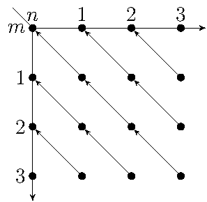

Лекция 8. Индукция с несколькими базами и параметрами. Определение и упрощение рекурсивных функций. Дополнительные тактики
Require Import Arith.
Require Import Lia.
Require Import Bool.
Import Nat Peano.
Индукция с несколькими базами
∀ p, 4 ≤ p → exists m n, p = 2 * m + 5 * n.
Section MultiBaseInduction.
Variable P : nat → Prop.
Рассмотрим другую задачу. Предположим, нужно доказать
∀ n, P n. Доказательство проходит по индукции, но предположим,
что шаг индукции ∀ n, P n → P (S n) можно доказать только для
0 < n. В этом случае нужно отдельно доказать две базы: P 0 и P 1.
Hypothesis step : ∀ n, 0 < n → P n → P (S n).
Hypothesis base0 : P 0.
Hypothesis base1 : P 1.
Theorem P_holds : ∀ n, P n.
Proof.
induction n as [| n IH].
* assumption.
Во второй подцели нужно доказать P (S n) из P n. Применение
step ничего не даст, потому что оно порождает цель 0 < n, которую
мы не можем доказать. Здесь можно применить индукцию еще раз. Второй
вызов тактики induction сначала переносит посылку P n под черту
(это обратно действию тактики intro), и целью становится
P n → P (S n), то есть шаг первой индукции. Это утверждение в свою
очередь доказывается индукцией по n. Базой новой индукции будет
P 0 → P (S 0), предположением индукции — P n → P (S n),
а доказать нужно P (S n) → P (S (S n)). Последнее утверждение
следует непосредственно из step.
* induction n as [| n IH1].
+ assumption.
+ apply step. { apply lt_0_succ. } { assumption. }
Фигурные скобки описаны в лекции 1. Они, как и *, + и т.п.
показывают, что доказываются две разных подцели. Они не обязательны,
но желательны.
Qed.
На самом деле, предположение одной из двух индукции (IH или IH1)
обычно не нужно. Можно рассмотреть частный случай аксиомы индукции,
где шаг индукции не использует предположение.
P 0 → (∀ n, P (S n)) → ∀ n, P n. (1)
Посылка ∀ n, P (S n) — это более сильное утверждение, чем
обычный шаг индукции ∀ n, P n → P (S n). Следовательно,
формула (1) есть более слабое утверждение, чем обычная аксиома
индукции
P 0 → (∀ n, P n → P (S n)) → ∀ n, P n.
Формула (1) говорит, что все числа имеют вид либо 0, либо S n для
некоторого n, поэтому для доказательства ∀ n, P n нужно
рассмотреть оба этих случая.
Это утверждение удобно применять тактикой destruct n. На цели P n
эта тактика производит две подцели: P 0 и P (S n). Как и в случае
с induction, можно задать имя новой переменной во второй подцели:
destruct n as [| n].
Докажем P_holds еще раз, используя destruct вместо первой индукции.
P 0 → (∀ n, P (S n)) → ∀ n, P n. (1)
P 0 → (∀ n, P n → P (S n)) → ∀ n, P n.
Theorem P_holds' : ∀ n, P n.
Proof.
destruct n as [| n].
* assumption.
*
Нужно доказать P (S n) без дополнительных посылок.
induction n as [| n IH].
+
+
База P 1 следует из base1.
assumption.
+
+
Шаг индукции: нужно доказать P (S (S n)) из индукционной посылки
P (S n). Это делается с помощью step.
apply step; [ apply lt_0_succ | assumption].
Qed.
Qed.
Можно было бы также использовать destruct вместо второй индукции.
Альтернативно можно доказать дизъюнкцию вида n = 0 ∨ 0 < n в шаге индукции
и рассмотреть разные случаи.
Theorem P_holds'' : ∀ n, P n.
Proof.
induction n as [| n IH]; [assumption |].
В шаге индукции докажем P (S n) из IH: P n.
assert (H : n = 0 ∨ 0 < n) by lia.
destruct H as [H | H].
*
Если n = 0, то P (S n), то есть P 1, следует из base1.
subst n; assumption.
*
*
Здесь нужно доказать P (S n) из IH: P n и H : 0 < n.
auto.
Тактика auto многократно применяет правило Modus Ponens.
Qed.
End MultiBaseInduction.
End MultiBaseInduction.
Section InductionWithParameters.
Как было сказано в лекции 6, функции, возвращающие bool,
реализуют алгоритмы. Они анализируют переданные аргументы и
определяют, когда вернуть true, а когда false.
Рассмотрим реализацию сравнения натуральных чисел из стандартной
библиотеки.
Fixpoint eqb (m n : nat) : bool :=
match m, n with
| 0, 0 ⇒ true
| 0, S _ ⇒ false
| S _, 0 ⇒ false
| S m1, S n1 ⇒ eqb m1 n1
end.
Докажем корректность этого определения.
Theorem eqb_eq : ∀ m n : nat, (m =? n) = true ↔ m = n.
Proof.
induction m as [| m IH]; destruct n as [| k]; simpl.
* split; intro; reflexivity.
* split; intro; discriminate.
* split; intro; discriminate.
* rewrite IH. symmetry; apply succ_inj_wd.
Qed.
Тактика induction m порождает две цели. К каждой из них
применяется destruct n, которая тоже порождает две цели. Поэтому
всего получается четыре цели, к каждой из которых применяется simpl.
Утверждение, доказываемое индукцией по m, есть
∀ n : nat, (m =? n) = true ↔ m = n.
Шаг индукции имеет вид
IH : ∀ n : nat, (m =? n) = true ↔ m = n
============================
∀ n : nat, (S m =? n) = true ↔ S m = n
Тактика destruct n порождает следующие цели.
IH : ∀ n : nat, (m =? n) = true ↔ m = n
============================
(S m =? 0) = true ↔ S m = 0
IH : ∀ n : nat, (m =? n) = true ↔ m = n
k : nat
============================
(S m =? S k) = true ↔ S m = S k
Выражение S m =? 0 по определению равно false, поэтому первая из
этих целей (после split; intro) доказывается тактикой discriminate
(см. ниже). Выражение S m =? S k по определению упрощается до m =? k,
что эквивалентно m = k согласно IH при подстановке k вместо
n. Поэтому задача сводится к доказательству
m = k ↔ S m = S k.
Что будет, если начать доказательство теоремы с intros m n? Для
переменной m, по которой идет индукция, нет разницы: делать intro m
или сразу использовать induction m. Однако если фиксировать n с
помощью intro n, то утверждение, доказываемое по индукции, будет
следующим.
(m =? n) = true ↔ m = n.
Шаг индукции будет иметь вид
IH : (m =? n) = true ↔ m = n
============================
(S m =? n) = true ↔ S m = n
Тактика destruct n порождает две цели, вторая из которых выглядит
следующим образом.
IH : (m =? S k) = true ↔ m = S k
============================
(S m =? S k) = true ↔ S m = S k
Как и раньше, S m =? S k упрощается до m =? k, однако теперь IH
не позволяет заменить это выражение на пропозициональное равенство.
Обозначим утверждение (m =? n) = true ↔ m = n за P m n. В первом
случае предположение индукции имеет вид IH : ∀ n, P m n, и
доказательство P (S m) n при n = S k использует IH k : P m k.
Такую схему доказательства по индукции можно проиллюстрировать
следующим образом, где стрелки показывают сведение одного утверждения
к другому.
Во втором случае проблема возникает из-за того, что n фиксируется на
протяжении всего доказательства: intro n означает "Рассмотрим
произвольный n". Предположение индукции имеет вид IH : P m n,
однако его невозможно использовать для доказательства P (S m) n при
n = S k.
Если утверждение, доказываемое по индукции, содержит несколько
универсально квантифицированных переменных, обычно имеет смысл
оставить кванторы по всем переменным, кроме параметра индукции.
Тактики induction n и destruct n вызывают intro по всем
переменным, предшествующим n. Если кванторы по этим переменным нужно
сохранить, квантор по n можно сделать первым. Альтернативно
можно убрать переменную m из контекста и добавить ∀ m
к цели (то есть сделать операцию, обратную к intro m) с
помощью тактики revert m.
∀ n : nat, (m =? n) = true ↔ m = n.
IH : ∀ n : nat, (m =? n) = true ↔ m = n
============================
∀ n : nat, (S m =? n) = true ↔ S m = n
IH : ∀ n : nat, (m =? n) = true ↔ m = n
============================
(S m =? 0) = true ↔ S m = 0
IH : ∀ n : nat, (m =? n) = true ↔ m = n
k : nat
============================
(S m =? S k) = true ↔ S m = S k
m = k ↔ S m = S k.
(m =? n) = true ↔ m = n.
IH : (m =? n) = true ↔ m = n
============================
(S m =? n) = true ↔ S m = n
IH : (m =? S k) = true ↔ m = S k
============================
(S m =? S k) = true ↔ S m = S k

End InductionWithParameters.
Определение и упрощение рекурсивных функций
Fixpoint f (n : nat) : nat :=
match n with
| 0 ⇒ 6
| 1 ⇒ 0
| S (S p as k) ⇒ f k + 2
end.
Вместо p можно написать _. Это подчеркивает тот факт, что
переменная p не используется в правой части.
Образец S (S p as k) означает, что n сопоставляется с S (S p)
(в частности, 2 ≤ n) и подтерму S p (то есть n-1)
одновременно дается имя k. Строчка S (S p) ⇒ f (S p) + 2 в
match не проходит, несмотря на то, что S p есть подтерм S (S p),
так как аргументом рекурсивного вызова должна быть переменная.
Вот другой вариант определения f.
Fixpoint f' (n : nat) : nat :=
match n with
| 0 ⇒ 6
| S k ⇒ match k with
| 0 ⇒ 0
| S p ⇒ f' k + 2
end
end.
Рассмотрим вычисление НОД с помощью алгоритма Евклида.
Fixpoint gcd (a b : nat) : nat :=
match b with
| 0 ⇒ a
| S k ⇒ gcd b (a mod S k)
end.
Нотация x mod y означает modulo x y. Рекурсия идет по второму аргументу,
и на первый взгляд modulo a (S k) не является подтермом S k. Действительно,
это определение не принималось в прежних версиях Coq, но с учетом равенства
по определению функцию modulo удалось определить так, что сейчас ограничение
на аргумент рекурсивного вызова выполняется.
В качестве конкретного примера доказательства по индукции
рассмотрим следующее утверждение.
Print Even.
Even = fun n : nat ⇒ exists m : nat, n = 2 * m.
Theorem f_even : ∀ n, Even (f n).
Proof.
destruct n as [| n].
* unfold Even. simpl f. exists 3. trivial.
* induction n as [| n IH].
+ simpl f. exists 0; trivial.
+ simpl.
После этой тактики терм f (S (S n)) преобразовался не в желаемый
f (S n) + 2, а в непонятный на первый взгляд терм
match n with
| 0 ⇒ 0
| S _ ⇒ f n + 2
end + 2.
Это произошло, потому что упрощение f было сделано два раза. Сначала
действительно f (S (S n)) преобразовался в f (S n) + 2, но затем
Coq попытался упростить f (S n) еще раз. Поскольку S n точно
отличен от 0, первый вариант в определении f не применяется. Зато
S n может сопоставляться как с 1, то есть с S 0, так и с S (S
p). При этом n будет равно 0 или S p, соответственно. Поэтому
match с этими двумя вариантами остается.
Отменим доказательство.
match n with
| 0 ⇒ 0
| S _ ⇒ f n + 2
end + 2.
Abort.
Чтобы предотвратить развертывание f (S n), можно поступить двумя
способами. Следующая команда запрещает упрощать f, если при этом
на верхний уровень выходит match.
Arguments f n : simpl nomatch.
Здесь n — тот идентификатор, который на самом деле использовался
как аргумент f в определении.
Следующее утверждение неверно и используется только для тестирования.
Goal ∀ n, f (S (S n)) = 0.
intro n. simpl.
Переписывает f (S (S n)) в f (S n) + 2.
Abort.
Второй способ состоит в определении леммы. В этом случае упрощение
происходит переписыванием с использование пропозиционального
равенства, а не равенства по определению, как в simpl.
Lemma f_simpl : ∀ n, f (S (S n)) = f (S n) + 2.
Proof. reflexivity. Qed.
Goal ∀ n, f (S (S n)) = 0.
intro n. rewrite f_simpl.
Переписывает f (S (S n)) в f (S n) + 2.
Abort.
Повторяем попытку доказать f_even.
Theorem f_even : ∀ n, Even (f n).
Proof.
destruct n as [| n].
* exists 3; trivial.
* induction n as [| n IH].
+ exists 0; trivial.
+ simpl. destruct IH as [m IH]. rewrite IH. exists (m + 1). ring.
Qed.
Дополнительные тактики
Комбинирование destruct и intros
Использование предикатов, кроме <?, <=? и =? в if
destruct E eqn:H
Доказательство целей с ложной посылкой
Goal true = false → 2 + 2 = 5.
intro H. discriminate H. Qed.
discriminate без аргумента пытается применить эту тактику к
каждой посылке.
Если посылка есть ложное бескванторное арифметическое равенство или
неравенство, то цель доказывается тактикой lia.
Goal ∀ x, x + 1 < x → 2 + 2 = 5.
intros x H. lia. Qed.
Если посылка имеет вид H : ¬A, где A истинно, то тактика contradict H
заменяет даную цель на A.
Goal ¬Even 2 → 2 + 2 = 5.
intro H. contradict H. exists 1; reflexivity. Qed.
Можно также воспользоваться тактикой exfalso, которая заменяет
текущую цель на False. Она соответствует правилу вывода
Gamma |- False
--------------
Gamma |- A
Если вспомнить, что ¬A есть сокращение для A →
False, то далее можно использовать apply H и превратить цель в A.
Gamma |- False
--------------
Gamma |- A
Goal ¬Even 2 → 2 + 2 = 5.
intro H. exfalso. apply H. exists 1; trivial. Qed.
Section Auto.
Variables P Q R : nat → Prop.
Hypothesis H1 : P 0.
Hypothesis H2 : Q 1.
Hypothesis H3 : ∀ n, P n → P (S n).
Hypothesis H4 : ∀ n, P n → Q (S n) → Q (S (S n)).
Hypothesis H5 : ∀ x, R x.
Goal Q 3. auto. Qed.
Кроме посылок из текущей цели auto использует базу данных
специально подобранных утверждений из стандартной библиотеки, например,
∀ n m : nat, S n = S m → n = m. Тактика auto with arith
использует еще больше арифметических фактов.
Тактика trivial является нерекурсивной версией auto. Она
доказывает цели, которые унифицируются с одной из посылок или с
утверждением из базы данных.
Goal R 3. trivial. Qed.
Если trivial и auto не могут доказать цель, они оставляют ее
без изменений. Поэтому их можно использовать для отсечения тривиальных
подцелей. Например, если базу индукции можно доказать с помощью
trivial, то induction n; trivial оставляет только шаг индукции.
Эта запись проще, чем induction n; [trivial |], которая явным
образом применяет trivial только к первой подцели.
Тактика easy пытается применить trivial, reflexivity,
symmetry, contradiction, destruct, split и некоторые другие
тактики. В отличие от trivial и auto, easy должна полностью
доказывать цель, иначе она завершается ошибкой. Тактика now tac
эквивалентна tac; easy.
Goal ∀ x, P x ∧ Q x → Q x ∧ P x.
easy. Qed.
Тактика tauto доказывает пропозициональные тавтологии.
Goal ∀ x, ~(P x ∨ Q x) → ¬P x ∧ ¬Q x.
tauto. Qed.
Однако нужно отметить, что здесь имеются в виду тавтологии
конструктивной логики, которые составляют собственное подмножество
тавтологий обычной классической логики. Например, следующая
версия закона де Моргана не доказывается.
Goal ∀ x, ~(P x ∧ Q x) → ¬P x ∨ ¬Q x.
try tauto. Abort.
Как и easy, tauto должна завершать доказательство цели.
Еще одной версией является тактика intuition, которая упрощает
цель и не вызывает ошибки, если цель не доказана полностью.
Variables A B C : Prop.
Goal (A ↔ B) → (~A → ¬B ∧ C).
intuition.
Показывает, что осталось доказать цель
H0 : A → False
H6 : A → B
H7 : B → A
============================
C
H0 : A → False
H6 : A → B
H7 : B → A
============================
C
Abort.
End Auto.
Команды Show и Focus
induction n. Show 2.
Напоминания и советы
- Рекурсивные определения должны начинаться ключевым словом Fixpoint, а
нерекурсивные — Definition.
- Несмотря на то, что в Coq есть отношения > и ≥
(идентификаторы gt и ge, соответственно), лучше использовать < и ≤
(lt и le) для единообразия. На самом деле, m > n определено как n < m
и аналогично для ≥.
- Нежелательно использовать вычитание на натуральных числах. Это так
называемое усеченное вычитание, при котором m-n = 0, если m ≤ n.
Поэтому обычные свойства, такие как x-(y-z) = x-y+z, для него не
выполняются. Вместо x и x-1 рекомендуется рассматривать S y и y.
- Можно использовать логические операции на bool: конъюнкцию && (идентификатор andb),
дизъюнкцию || (orb) и отрицание negb (без нотации).
- Аргументом тактик apply и rewrite может являться любой терм типа Prop, не обязательно переменная (метка) из текущего контекста. Так, нет необходимости добавлять теорему plus_comm тактикой assert (H := plus_comm), подставлять туда аргументы с помощью specialize (H 1 2) и только затем вызывать rewrite H, чтобы переписать 1 + 2 в 2 + 1. Можно сразу писать rewrite plus_comm или rewrite (plus_comm 1 2).
This page has been generated by coqdoc